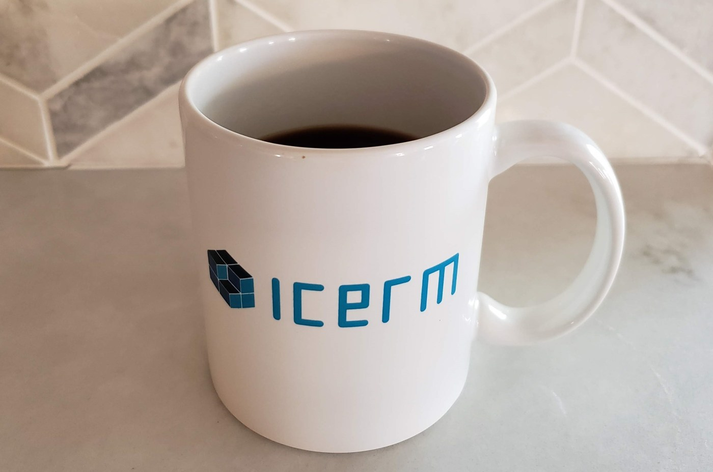
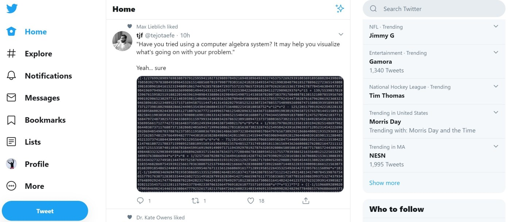
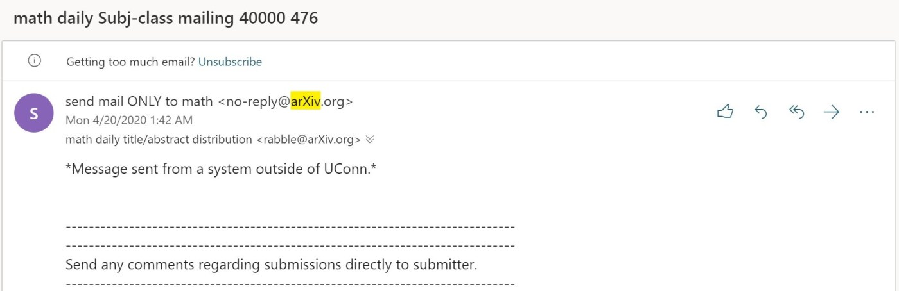
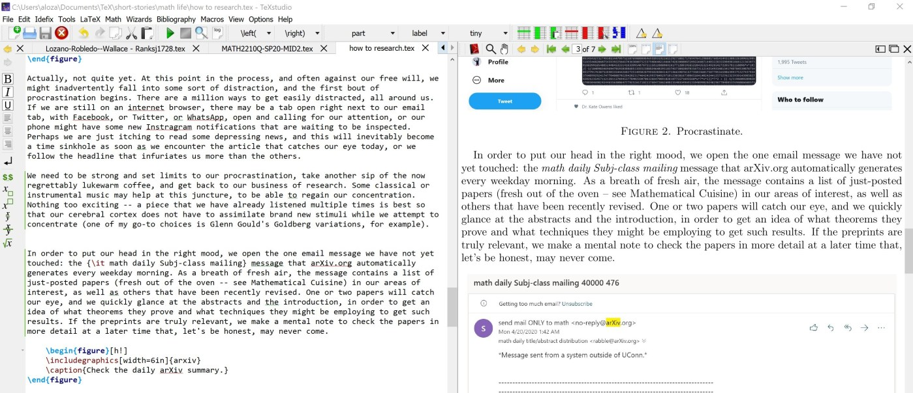
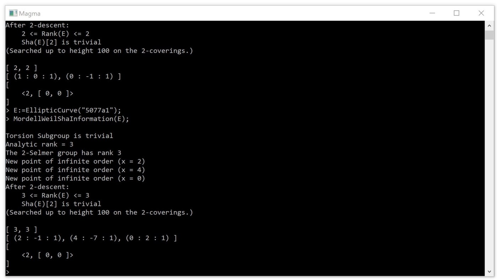
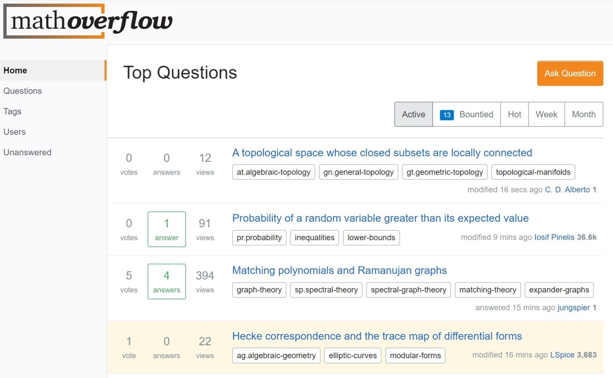
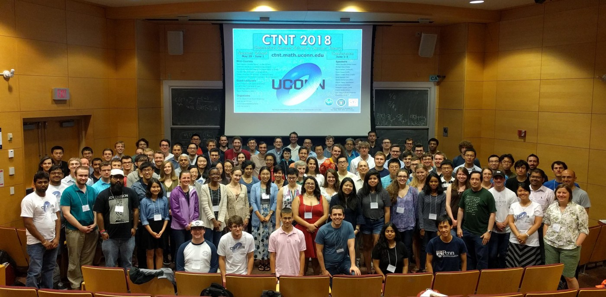

Disclaimer: In this entry I describe my own experience doing research in pure math. Perhaps, others have different experiences, and I would love to hear about those, but I believe this narrative may be representative of a majority of researchers.
The Best Case Scenario
Let us begin by describing the best-case scenario, that is, a day when we have a few consecutive hours to dedicate to our research. Of course, this is not the typical scenario, and most days we have to fight to squeeze a few minutes of research here or there, particularly during the Fall or Spring semester.
The first (possibly, the zero-th) and most crucial step is to get a nice, hot cup of coffee ready. The quality of the coffee is directly proportional to our research productivity, so this is not a step to be taken lightly. Whether we are in the office, at home, or at our favorite coffee shop, there should be a steaming cup of coffee next to our laptop before we begin. Ideally, the hot liquid fuel is inside a ceramic cup, but this is not crucial, as paper cups have evolved to the point that they do not absolutely ruin the flavor of the coffee, so coffee in a paper cup is better than no coffee at all.
We take a sip of our coffee, slightly burn our tongue and palate in the process, and open our laptop or wake our desktop computer up. It is time to do research.

Actually, not quite yet. If you are anything like me, we cannot resist having a look at our email inbox, in a vain attempt to clear it before research begins. This is our first mistake of the day, and one that can be quite costly and time consuming. For some of us, however, it is a mistake that is somewhat unavoidable if we hope to concentrate on our research later on. There are probably a few emails from undergrad students that we can answer quickly, which is, typically, a pleasant experience. There might be one or two messages that require some longer explanations in order to appease some of the more demanding or annoying students, which is, typically, an irksome experience that may already turn our mood towards the darker side, but nothing that another sip of steaming coffee cannot fix. Unfortunately, we have also received a couple of messages from colleagues in our department, or directly from the Head, that cannot be postponed and a timely response is of the essence. Probably, we are on a committee that needs our input or guidance. Most likely, a colleague has proposed some bizarre idea at 3:57am that we need to put a stop to absolutely right now before it gains momentum, and before another equally out-of-touch colleague supports the outlandish idea and the argument snowballs into a nightmare.
Let us assume that it is one of the wonderful days when all those clerical, teaching, and committee messages did not consume our patience or our hours allotted to research, and we can actually put all those thoughts aside for the time being to think about research. It is likely that we have a few messages pinned to our inbox, or starred in Gmail, or itemized in a to-do list, with some crucial tasks that are nagging us for our timely attention. There is at least one article referee report that we are supposed to write, that is overdue, and an editor has asked for an update. There are a couple of research collaborators that are checking in. There is a grant proposal that is due in a few weeks and we really, truly, need to get started. There are a couple of email messages that we had not touched before, from our graduate students (our doctoral advisees), and they need our help to move forward with their dissertation research, with their career, and with their life, so we cave and we spend a few minutes answering their messages with new ideas, hints, references, and encouraging words to let them know that they are on the right track.
Once the graduate students are taken care of, we must muster all our strength and put all those other very important items aside (grants, reports, check-ins), for now, and try to think about our own research project. We will get back to all those crucial items later, but the very first hours of research, when we still have our full energy and complete focus, need to be spent on pure research. Here we go, it is research time, now for real.

Actually, not quite yet. At this point in the process, and often against our free will, we might inadvertently fall into some sort of distraction, and the first bout of procrastination begins. There are a million ways to get easily distracted, all around us. If we are still on an internet browser, there may be a tab open right next to our email tab, with Facebook, or Twitter, or WhatsApp, open and calling for our attention, or our phone might have some new Instagram notifications that are waiting to be inspected. Perhaps we are just itching to read some depressing news, and this will inevitably become a time sinkhole as soon as we encounter the article that catches our eye today, or we follow the headline that infuriates us more than the others.
We need to be strong and set limits to our procrastination, take another sip of the now regrettably lukewarm coffee, and get back to our business of research. Some classical or instrumental music may help at this juncture, to be able to regain our concentration. Nothing too exciting — a piece that we have already listened to multiple times is best so that our cerebral cortex does not have to assimilate brand new stimuli while we attempt to concentrate (one of my go-to choices is Glenn Gould’s Goldberg variations, for example).
In order to put our head in the right mood, we open the one email message we have not yet touched: the math daily Subj-class mailing message that arXiv.org automatically generates every weekday morning. As a breath of fresh air, the message contains a list of just-posted papers (fresh out of the oven – see Mathematical Cuisine) in our areas of interest, as well as others that have been recently revised. One or two papers will catch our eye, and we quickly glance at the abstracts and the introduction, in order to get an idea of what theorems they prove and what techniques they might be employing to get such results. If the preprints are truly relevant, we make a mental note to check the papers in more detail at a later time that, let’s be honest, may never come.

And now, finally, we have completed the initial ritual, and we are ready for our very own research. We open our LaTeX editor of choice, and we encounter a number of .tex files that are open in separate tabs. Each file is a piece of an in-progress project that we are working on as a solo author or with collaborators. So the first decision is to pick a project to look at. In my own experience, I tend to fixate on one project at a time (unless time constraints force me to bounce among projects), so before we opened the editor, we knew what file we were going to concentrate on and we try to ignore the rest. Scrolling through our TeX code, we quickly review the status of the project. But before we describe what happens next, let us backtrack a few years.

How to Find Yourself Working on a Research Project
The time as a doctoral student in mathematics and, to some extent, the time as a postdoc, serves several purposes. One, we earn a diploma and a formal recognition that allows us to be employable at institutions of higher education (and certain bragging rights). Two, we dive deeper and deeper into one specialized area of mathematics, until we are able to solve a particular problem (the so-called thesis problem), and write an expository solution that is publishable (the so-called thesis or dissertation). Three, we learn and practice our basic teaching methods, at the expense of the undergrad students that serve as guinea pigs (see Teaching Debut). We also get to improve our oral exposition by giving talks to fellow graduate students and faculty members who, hopefully, will give us the constructive feedback that is necessary to hone our presentation skills. Four, we create a network of colleagues and mathematical acquaintances around us, and we advertise our brand new existence to the community. And five, we develop some intuition about where to find other research-level problems that we can work on by ourselves or with collaborators. All these skills, one through five, are paramount for a mathematician, but numbers four and five are, in fact, crucial for our survival in the research part of the profession. Either we have amazing colleagues that invite us to participate in their ongoing projects, or they propose ideas that we can work on as a team, or we have developed our own fine sense of mathematical smell, and we can track down the scent of a problem that is within our reach. Unfortunately, many PhD students do not succeed in steps four and/or five, and eventually abandon mathematical research.
There are two categories of research projects in our to-do list: there are those where “the math” has been completed, the proofs are scribbled in pads of paper, or safely stored in our neurons, and they just need to be written up. And then there are those projects where “the math” is incomplete, and some of the proofs are still missing both on paper and in our heads. The former ones are much easier to tackle, and can be immensely satisfying as we fit all the pieces of the puzzle into one coherent narrative. The latter type of projects are an uphill battle, as we fight the uncertainty of whether we may ever reach the hill top.
For the sake of argument, let us assume we are fighting the uphill battle of an open ended project. We have a statement of a theorem in mind, that we are trying to prove (or salvage), and we are trying to work out a strategy that may get us there. Or, perhaps, we are in the very early stages of our research and we are trying to figure out what is the theorem that is lurking in the background of some phenomenology we have unearthed. The battle of the wits begins with some examples that, we hope, are a proof-of-concept of what we are trying to study. Such examples should be general or generic enough that they may reveal all the intricacies of the question we are trying to study. Finding such illustrative examples is an art, and one of the most important steps in our job. With some luck, our doctoral training served us well and we are able to produce these examples with some ease.
After much hard work with examples and some educated guesses, we have arrived at a candidate for a statement/theorem that we are sufficiently confident may be true or, rather, true modulo some minor adjustments that will become clear during the proof. Further, we hope we can prove it with the techniques that are in our repertoire and without having to assume too many conjectures or restrictive hypotheses. It is time then to start putting together the building blocks that will form the proof. Now, the key is to tease apart preliminary lemmas that we can prove as stepping stones towards the bigger results.
We are back in front of our laptop, lukewarm coffee by our side, our TeX editor is fired up and ready, the file for the project we need to work on is displayed on the screen, we have typed up a statement of a lemma that we need to prove next, and… we are stumped. Utterly and miserably stumped. We were stumped a few days ago, and we are stumped today. We sit back, grab the coffee cup, take another sip, and think. This step can take minutes, hours, days, or months, so patience is of the essence. We have considered the usual suspects of approaches and nothing has worked so far. Perhaps we made a mistake somewhere, and the statement we believe true is actually false, so we go back to the drawing board (literally, a blackboard, if at all possible) and work out a few more examples. With the aid of a computer and a computer mathematical system (Sage/CoCalc, Magma, or similar), we can compute dozens or hundreds of examples to put our mind at ease: everything seems to corroborate our intuition, the statement seems fine, so it is just us — we are not ready to prove this lemma yet. Thus, we contemplate it for a bit longer.

Unfortunately, at this point life beckons and it catches us at a moment of weakness when we are most susceptible to getting distracted. Our wife is texting us, or our kids’ teachers have emailed us, or a friend sent a hilarious group text and we are committed to finding the perfect GIF to send back as a reply,… Any or all of the above distractions lead us away from our noble goals of the day, and the lemma’s proof will remain elusive one more day. Our research time is up and we have to move to the next thing in our lives: teaching, a committee meeting, picking kids up from school, preparing dinner, etc. In other professions, I imagine that a worker can put their job on hold for the day, and rest assured that they will continue with their tasks at 9am the next morning. But the mathematician brings home the mental burden of the proof that is eluding us at the moment. We are driving back from work, and the problem is in our head. We are cooking pasta and we continue to ruminate possibilities while absentmindedly stirring the pot. The lights in our bedroom turn off, we lie in bed, and the evasive proof continues to haunt us. By morning, we might have a few good ideas, or most likely, just ideas that may be worth pursuing. However, today’s schedule will not allow any time for research, so the best we can do is to quickly scribble some notes and impatiently wait for the next day when there is a chunk of time that we can dedicate to research. Sadly, the brain cannot put the problem aside, we continue to think about it, and we are often unable to fully concentrate on other tasks or people around us. To our families: we are sorry.
After a couple of days, we are able to dedicate a handful of hours to our research, and we finally have time to try all the ideas that the relentless neurons have accumulated in the meantime. Regrettably, none work. We are demoralized, and we procrastinate some more. In an attempt to be productive in other ways, we finish a referee report. When we go back to our research question, we are still fresh out of ideas, and the bad mood sets in. Weeks may go by before we make some progress. The good news is that there is help out there. We have mentors, colleagues, and friends that may be able to help. We send an SOS and a few of them respond with useful ideas, and this buys us some renewed energy and we continue to attack our problem. If our immediate network is of no help, then it is time to use the big guns: Math Overflow. Posting a question on Math Overflow surely is intimidating, but it is worth every penny, as long as we have thought about our problem long and hard before posting, which we have. Math Overflow is not the miracle cure for the research blues, but sometimes it helps a bit, and sometimes it helps a lot. Either with the help of our network or our extended overflow network, we are able to move on! Only to advance a couple of steps until we find the next roadblock, which is invariably more ominous and intimidating than the previous one. Oh well.

Sometimes, nothing works, and after months of work, there is little juice left in our research engines. This is particularly true at the end of the Spring semester, when we are exhausted from all our teaching, committees, department meetings, hiring, refereeing, and our other various academic duties. There is only one foolproof way to reload our research energy tanks: a good conference. It is time to set aside our project to travel somewhere exotic, like Pittsburgh, PA, or Oaxaca, Mexico, and get together with all our friends and colleagues for a few days of math, coffee, laughs, food, and commiserating (as I write this, we are in Covid-19 social isolation mode, though, so we hope in-person conferences do take place in Summer 2020). In a good conference, the math energy is electric, contagious, the talks are invigorating, and we travel back home ready to fight the good fight and prove our next lemma towards our next great theorem. We might be just as stuck as we were before, but our energy and enthusiasm are renewed. We are back in the game, baby!

Grand Finale
After months of progress and setbacks, and further progress, we reach the glorious moment when our first complete draft is ready. We send it to our closest allies for comment and wait. After a few days, some of them reply with feedback, additional references to check, things to verify, etc. We fix these issues, and (with a fair amount of trepidation) it is time to share with the extended network: we post our pre-print in the arXiv. Two or three days later, a paper of our own creation appears in the math daily Subj-class mailing message that our colleagues world-wide will receive, so that they too can inspect our paper. More feedback arrives from across the globe, and after all the necessary changes and updates, our paper is ready to leave the nest, and it is sent to a journal’s editor, who in turn will send it to a referee… The refereeing process is a beast of its own that will be the subject of another post, so we will not dwell on that here. It suffices to say that after a few iterations of rejections, reports, and revisions, our pride and joy, the paper we have been working on for months, most likely years, is accepted for publication in a peer-reviewed journal, and we celebrate the birth of our latest research baby, only for a few minutes, because we are very busy with another two or three projects that are begging for more of our attention.